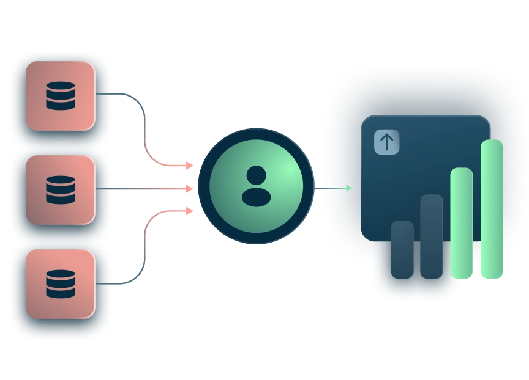

Your syndicated data is already a week old. Programmatic spend leaks at scale. Audience segments lose the brief in translation. Kana gives CPG teams real-time category intelligence, modeled media allocation, and audiences that trace back to the original brief — all connected to shelf velocity.

From category intelligence to synthetic audiences — Kana closes the gaps that have been costing CPG teams share, margin, and speed.
The Omni-Channel Media Planner models saturation curves against your own campaign data. Budget allocation stops being driven by habit and starts being driven by modeled ROAS.
Learn more →Targeting parameters from your media brief translate automatically to platform-specific configurations across Meta, YouTube, The Trade Desk, and DV360 — no manual translation.
Learn more →Channel saturation curves surface before you overspend. Kana models where each additional dollar stops producing incremental return — and reallocates automatically.
Learn more →The Category Intelligence Hub ingests scan data, POS feeds, and external category signals and answers category questions in seconds. Stop compiling and start deciding.
Learn more →Marketing Intelligence unifies fragmented data sources into one live view. Query across retailer portals, internal ERP, and CRM in plain language without writing SQL.
Learn more →POS feeds cross-referenced against external category signals surface anomalies automatically — so you walk into retailer meetings with current data, not last week's spreadsheet.
Learn more →Audience Manager lets campaign teams build, validate, and activate audience segments in plain language — no SQL, no data engineering queue. Every segment is traceable back to the original brief.
Learn more →Synthetic Data Generation creates audience models for new SKU launches and new markets without waiting for first-party data to accumulate. Start targeting precisely on day one.
Learn more →When a campaign underperforms, you can actually answer why. Brief-to-activation traceability closes one of the most common audit gaps in CPG campaign operations.
Learn more →“We're getting statistically robust campaign answers in minutes instead of weeks — and catching the tagging anomalies that were quietly skewing our performance data without anyone knowing.”
Read the story ›From audience building to offline attribution — Kana's AI capabilities connect your warehouse to every campaign decision.



“Kana has completely unlocked how we deliver relevancy to users across retail media networks, but there’s also huge potential for us to monetize users outside of our domain.”
Kai Kickuth, Sr. Product Manager at Bol.com
Discover how leading CPG brands are closing the attribution gap, eliminating programmatic waste, and moving from weekly syndicated data to real-time shelf intelligence — with examples drawn from actual enterprise deployments.

Traditional CDPs were built for digital profiles and email lists. Kana is built warehouse-native — directly on your Snowflake or Databricks data, with no duplication, no months-long implementation, and no data leaving your environment.
Kana operates on a zero-copy data paradigm. We don't store your customer data or POS logs. We simply query directly from your existing data warehouse where it remains under your strict administrative control.


Everything you need to know about Kana for CPG.
Instantly sync CPG audiences and velocity data to any network you run campaigns in.
Talk to a CPG solutions expert and get your first intelligence query live in under 30 days.